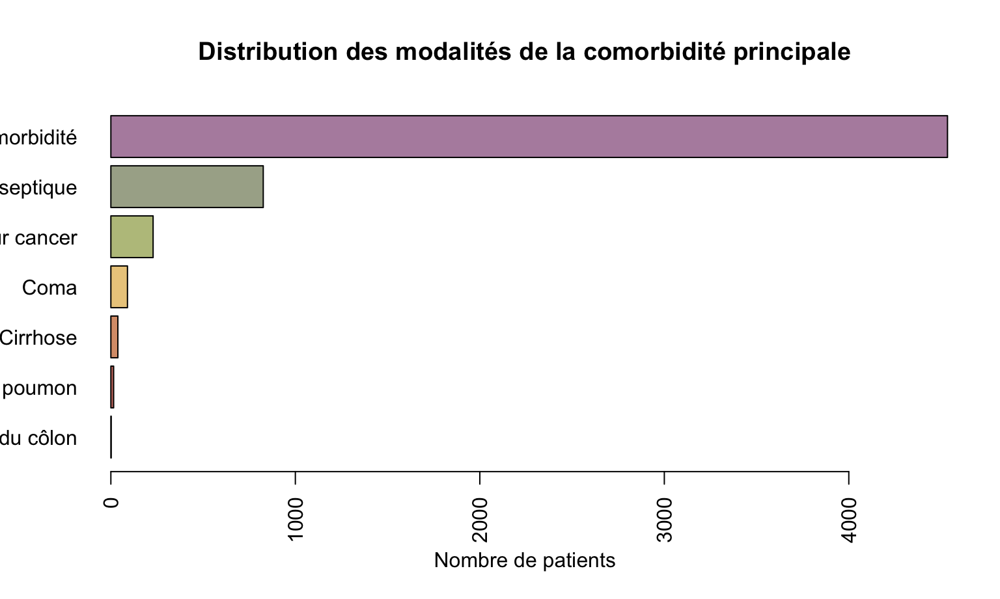

cat_cols_disease_category <- grep("disease_category", cat_cols, value = TRUE)
cat_cols_cancer <- grep("cancer", cat_cols, value = TRUE)
cat_cols_comorbidity <- grep("comorbidity", cat_cols, value = TRUE)
cat_cols_diagnosis <- grep("diagnosis", cat_cols, value = TRUE)
cat_cols_death <- grep("death", cat_cols, value = TRUE)
cat_cols_demographic <- c("sex", "rhc", "dnr_status", "insurance_class", "race", "income")Devoir Épidémiologie
Important
Utilisation de l’IA
Des LLMs ont été utilisés à plusieurs reprises dans ce devoir, pour deux tâches principales :
En cas de problème d’exécution du code R (pour suggérer correction et amélioration)
Pour amélioration du rendu depuis un fichier Quarto Markdown vers PDF.
Utilisation de Gemini pour le rendu Quarto et Github Copilot pour le code R.
1 Introduction
1.1 Énoncé du devoir
Étude observationnelle réalisée en unité de soins intensifs
Question : efficacité de la pose d’une sonde de Swan Ganz (Right Heart Catheterization, RHC) sur la mortalité des patients critiques, en tenant compte des facteurs pronostiques et des risques associés à cette procédure invasive.
Objectif : évaluer l’apport de la procédure de cathétérisme cardiaque droit sur la mortalité́, en tenant compte des nombreux facteurs pronostiques.
Source : Connors et al. (1996): The effectiveness of RHC in the initial care of critically ill patients. J American Medical Association 276:889-897.
1.2 Contexte
Cathéter de Swan Ganz : dispositif médical diagnostique et thérapeutique mesurant en temps réel le débit et les pressions sanguines dans les cavités cardiaques droites et l’artère pulmonaire par cathéterisme cardiaque droit (RHC).
Utilisé en réanimation à partir des années 1970, mais remis en question après réévaluation du rapport bénéfice/risque.
Études randomisées contrôlées difficiles à réaliser pour des raisons éthiques, car de nombreux praticiens considèrent que ne pas utiliser la sonde de Swan-Ganz pourrait entraîner une perte de chances pour les patients.
Étude observationnelle conçue par Connors et al. pour aborder la question d’un point de vue épidémiologique, avec une cohorte prospective multicentrique de 5735 patients adultes hospitalisés en réanimation pour une déficience d’organe parmi 9 prédéfinies, dont 2184 ont eu un RHC.
Données rapportées : survie à J30, durée d’hospitalisation en réanimation et hospitalisation traditionnelle, coût du séjour, intensité des soins reçus.
1.3 Plan du devoir
Data-management : nettoyage du jeu de données, renommage des variables et de leurs catégories, remise à l’échelle le cas échéant, prise en compte des données aberrantes ou manquantes.
Analyse descriptive univariée de la population, des différentes variables et de leur répartition au sein de la cohorte.
Analyse bivariée de ces variables au sein de sous-groupes : chez les patients ayant reçu ou non un RHC, ainsi que chez les patients décédés ou non à J30, afin de mettre en évidence une éventuelle différence significative entre les groupes.
Analyse multivariée pour répondre à la question posée : la réalisation d’un cathéterisme cardiaque droit est-elle bénéfique au patient, toute covariable d’ajustement étant comparable par ailleurs ?
Pour éviter un biais d’indication et améliorer la comparabilité des patients, un score de propension à la réalisation d’un cathéterisme cardiaque droit a été conçu par régression logistique multiple, permettant un ajustement sur un grand nombre de variables de confusion potentielles.
Analyse de survie à J30, comparant les populations ayant reçu ou non le RHC, toute chose étant comparable par ailleurs grâce à l’ajustement sur le score de propension.
Conclusion : synthèse des résultats, discussion des limites de l’étude, implications cliniques et perspectives de recherche future.
2 Data-management
Le fichier contient 5735 observations et 63 variables, avec des types de données variés (numériques, caractères, facteurs).
La première colonne et la dernière sont inutiles pour l’analyse (identifiant et index), et seront supprimées.
Les variables de date sont au format caractère et doivent être converties en format date pour une manipulation plus facile.
Les variables de type “Yes”/“No” seront converties en facteurs pour faciliter l’analyse statistique.
Les colonnes sont renommées pour faciliter leur manipulation et leur compréhension.
2.1 Nettoyage et renommage des variables
2.2 Conversion des types de données
2.3 Vérification de la cohérence des dates
2.3.1 Vérification de la cohérence entre date de décès et date des dernières nouvelles
Il existe une colonne codant pour la date de décès et une codant pour la date des dernières nouvelles.
Pour les patients décédés, on vérifie que la date de décès correspond à la date des dernières nouvelles
Il existe 2154 cas où les dates des dernières nouvelles sont incohérentes (soit postérieure à la date de décès, soit antérieure) : pour ces patients, on propose de corriger la date des dernières nouvelles en la remplaçant par la date de décès.
Après correction il existe 0 cas incohérents, ce qui correspond à une correction réussie de tous les cas de dates incohérentes entre date de décès et date des dernières nouvelles.
2.3.2 Vérification de la cohérence entre date de sortie d’hospitalisation et date des dernières nouvelles
On vérifie que la date de sortie d’hospitalisation n’est pas postérieure à la date des dernières nouvelles, ce qui serait incohérent.
1 patient a une date de sortie d’hospitalisation inconnue
Une vérification rapide montre qu’il est décédé 394 jours après son admission. On ne peut pas affirmer que le patient est sorti entre temps de son hospitalisation.
3 Description du jeu de données
3.1 Vue d’ensemble du jeu de données
- Nombre d’observations et de variables
| Nom | Nombre d’observations | Nombre de variables |
|---|---|---|
| df | 5735 | 61 |
- Types de variables (catégorielles, numériques, dates)
| Type | Nombre |
|---|---|
| factor | 33 |
| numeric | 24 |
| Date | 4 |
3.2 Variables catégorielles
- Nom des variables catégorielles
Variables catégorielles
| Variable |
|---|
| primary_disease_category |
| secondary_disease_category |
| cancer |
| death_180d |
| comorbidity_cardio |
| comorbidity_chf |
| comorbidity_dementia |
| comorbidity_psych |
| comorbidity_chronic_pulmonary |
| comorbidity_renal |
| comorbidity_liver |
| comorbidity_upper_gi_bleeding |
| comorbidity_malignancy |
| comorbidity_immunosuppression |
| comorbidity_transfer |
| comorbidity_myocardial_infarction |
| sex |
| death_30d |
| rhc |
| dnr_status |
| insurance_class |
| diagnosis_respiratory |
| diagnosis_cardiovascular |
| diagnosis_neurological |
| diagnosis_gastrointestinal |
| diagnosis_renal |
| diagnosis_metabolic |
| diagnosis_hematologic |
| diagnosis_sepsis |
| diagnosis_trauma |
| diagnosis_orthopedic |
| race |
| income |
- On peut séparer les variables catégorielles en plusieurs “sous-catégories” selon leur thème : comorbidités, diagnostics, variables sociodémographiques, etc.
- Modalités des var)iables catégorielles en bar plot avec la proportion de chaque modalité


4 Annexe – Code R
library(forecast)
library(plotrix)
library(randomForest)
library(tidyr)
library(epiR)
library(viridisLite)
library(ggplot2)
library(binom)
library(survminer)
library(pROC)
library(treemap)
library(psy)
library(MASS)
library(rpart)
library(rpart.plot)
library(plotly)
library(lmerTest)
library(psych)
library(lme4)
library(prettyR)
library(zoo)
library(kableExtra)
library(gtsummary)
library(lattice)
library(survey)
library(corrplot)
library(mice)
library(paletteer)
library(skimr)
library(nord)
library(wesanderson)
library(lubridate)
library(qgraph)
library(nlme)
library(pwr)
library(ape)
library(survival)
library(gmodels)
library(httpgd)
library(e1071)
library(psy)
library(reshape2)
knitr::opts_chunk$set(echo = TRUE)
#file_qmd <- "/Users/thomashusson/Documents/Projets/M2biostatistiques/devoir_stats_avancees/devoir_stats_avancees.qmd"
#extraction du code R pour le mettre à la fin du quarto md
detect_qmd_path <- function() {
candidates <- c(
knitr::current_input(),
Sys.getenv("QUARTO_DOCUMENT_PATH", ""),
Sys.getenv("QUARTO_INPUT_FILE", ""),
"devoir_epidemio.qmd",
file.path("S2", "devoir_epidemio", "devoir_epidemio.qmd")
)
candidates <- unique(candidates[nzchar(candidates)])
for (p in candidates) {
if (file.exists(p)) return(normalizePath(p, winslash = "/", mustWork = TRUE))
}
NA_character_
}
file_qmd <- detect_qmd_path()
if (is.na(file_qmd)) {
warning("Extraction des chunks R sautée : impossible de localiser le .qmd (problème de working directory / IDE).")
} else {
lines <- readLines(file_qmd, warn = FALSE)
# trouver les débuts de chunks R
starts <- grep("^```\\{r\\b", lines)
code_r <- character(0)
for (s in starts) {
if (s >= length(lines)) next
rel_end <- which(grepl("^```\\s*$", lines[(s + 1):length(lines)]))[1]
if (is.na(rel_end)) {
warning("Extraction des chunks R partielle : fin de chunk manquante après la ligne ", s, ".")
next
}
e <- s + rel_end
# lignes à l’intérieur du chunk (excluant les balises de début et fin)
chunk_lines <- lines[(s + 1):(e - 1)]
# filtrer : garder seulement les lignes qui **ne sont pas des options Quarto**
real_code <- chunk_lines[!grepl("^\\s*#\\|", chunk_lines)]
code_r <- c(code_r, real_code, "")
}
outfile <- file.path(dirname(file_qmd), "all_chunks_code.R")
cat(code_r, file = outfile, sep = "\n")
}
# Charger les données
df <- read.csv2("/Users/thomashusson/Documents/Projets/M2biostatistiques/S2/devoir_epidemio/rhc devoir épidémio-RC csv.csv", header = TRUE, stringsAsFactors = FALSE)
summary(df)
colnames(df)
str(df)
skimr::skim(df)
# Supprimer les colonnes inutile (ROWNAMES et PTID) en appelant explictement les noms des colonnes à supprimer
df <- df[, !(colnames(df) %in% c("ROWNAMES", "PTID"))]
colnames(df)
# Renommer les colonnes
# syntaxe : names(df)[names(df) == "ANCIEN_NOM"] <- "NOUVEAU_NOM"
names(df)[names(df) == "CAT1"] <- "primary_disease_category"
names(df)[names(df) == "CAT2"] <- "secondary_disease_category"
names(df)[names(df) == "CA"] <- "cancer"
names(df)[names(df) == "SADMDTE"] <- "date_admission"
names(df)[names(df) == "DSCHDTE"] <- "date_discharge"
names(df)[names(df) == "DTHDTE"] <- "date_death"
names(df)[names(df) == "LSTCTDTE"] <- "date_last_news"
names(df)[names(df) == "DEATH"] <- "death_180d"
names(df)[names(df) == "CARDIOHX"] <- "comorbidity_cardio"
names(df)[names(df) == "CHFHX"] <- "comorbidity_chf"
names(df)[names(df) == "DEMENTHX"] <- "comorbidity_dementia"
names(df)[names(df) == "PSYCHHX"] <- "comorbidity_psych"
names(df)[names(df) == "CHRPULHX"] <- "comorbidity_chronic_pulmonary"
names(df)[names(df) == "RENALHX"] <- "comorbidity_renal"
names(df)[names(df) == "LIVERHX"] <- "comorbidity_liver"
names(df)[names(df) == "GIBLEDHX"] <- "comorbidity_upper_gi_bleeding"
names(df)[names(df) == "MALIGHX"] <- "comorbidity_malignancy"
names(df)[names(df) == "IMMUNHX"] <- "comorbidity_immunosuppression"
names(df)[names(df) == "TRANSHX"] <- "comorbidity_transfer"
names(df)[names(df) == "AMIHX"] <- "comorbidity_myocardial_infarction"
names(df)[names(df) == "AGE"] <- "age"
names(df)[names(df) == "SEX"] <- "sex"
names(df)[names(df) == "EDU"] <- "education_years"
names(df)[names(df) == "SURV2MD1"] <- "survival_probability"
names(df)[names(df) == "DAS2D3PC"] <- "DASI_score"
names(df)[names(df) == "T3D30"] <- "time_to_death_or_censoring"
names(df)[names(df) == "DTH30"] <- "death_30d"
names(df)[names(df) == "APS1"] <- "apache_score"
names(df)[names(df) == "SCOMA1"] <- "coma_score"
names(df)[names(df) == "MEANBP1"] <- "mean_blood_pressure"
names(df)[names(df) == "WBLC1"] <- "wbc"
names(df)[names(df) == "HRT1"] <- "heart_rate"
names(df)[names(df) == "RESP1"] <- "respiratory_rate"
names(df)[names(df) == "TEMP1"] <- "temperature"
names(df)[names(df) == "PAFI1"] <- "pa_fi_ratio"
names(df)[names(df) == "ALB1"] <- "albumin"
names(df)[names(df) == "HEMA1"] <- "hematocrit"
names(df)[names(df) == "BILI1"] <- "bilirubin"
names(df)[names(df) == "CREA1"] <- "creatinine"
names(df)[names(df) == "SOD1"] <- "sodium"
names(df)[names(df) == "POT1"] <- "potassium"
names(df)[names(df) == "PACO21"] <- "paco2"
names(df)[names(df) == "PH1"] <- "ph"
names(df)[names(df) == "SWANG1"] <- "rhc"
names(df)[names(df) == "WTKILO1"] <- "weight"
names(df)[names(df) == "DNR1"] <- "dnr_status"
names(df)[names(df) == "NINSCLAS"] <- "insurance_class"
names(df)[names(df) == "RESP"] <- "diagnosis_respiratory"
names(df)[names(df) == "CARD"] <- "diagnosis_cardiovascular"
names(df)[names(df) == "NEURO"] <- "diagnosis_neurological"
names(df)[names(df) == "GASTR"] <- "diagnosis_gastrointestinal"
names(df)[names(df) == "RENAL"] <- "diagnosis_renal"
names(df)[names(df) == "META"] <- "diagnosis_metabolic"
names(df)[names(df) == "HEMA"] <- "diagnosis_hematologic"
names(df)[names(df) == "SEPS"] <- "diagnosis_sepsis"
names(df)[names(df) == "TRAUMA"] <- "diagnosis_trauma"
names(df)[names(df) == "ORTHO"] <- "diagnosis_orthopedic"
names(df)[names(df) == "ADLD3P"] <- "adl_score"
names(df)[names(df) == "URIN1"] <- "urine_output"
names(df)[names(df) == "RACE"] <- "race"
names(df)[names(df) == "INCOME"] <- "income"
# Conversion des dates (les chaînes vides -> NA pour éviter les warnings)
df$date_admission[df$date_admission == ""] <- NA
df$date_discharge[df$date_discharge == ""] <- NA
df$date_death[df$date_death == ""] <- NA
df$date_last_news[df$date_last_news == ""] <- NA
# Conversion en format date
df$date_admission <- as.Date(df$date_admission, format = "%d/%m/%Y")
df$date_discharge <- as.Date(df$date_discharge, format = "%d/%m/%Y")
df$date_death <- as.Date(df$date_death, format = "%d/%m/%Y")
df$date_last_news <- as.Date(df$date_last_news, format = "%d/%m/%Y")
str(df$date_death)
df$date_death <- as.Date(df$date_death, format = "%d/%m/%Y")
str(df$date_death)
# Facteurs et numériques
df$death_180d <- factor(df$death_180d, levels = c("No", "Yes"))
df$primary_disease_category <- factor(
df$primary_disease_category,
levels = c("COPD","MOSF w/Sepsis","MOSF w/Malignancy","ARF","CHF","Coma","Cirrhosis","Lung Cancer","Colon Cancer"),
labels = c("BPCO","Choc septique","Choc sur cancer","Insuffisance rénale aiguë","Insuffisance cardiaque","Coma","Cirrhose","Cancer du poumon","Cancer du côlon")
)
unique(df$primary_disease_category)
table(df$primary_disease_category)
df$secondary_disease_category <- factor(
df$secondary_disease_category,
levels = c("", "MOSF w/Sepsis","MOSF w/Malignancy", "Coma","Cirrhosis","Lung Cancer","Colon Cancer"),
labels = c("Pas de comorbidité","Choc septique","Choc sur cancer", "Coma","Cirrhose","Cancer du poumon","Cancer du côlon")
)
df$comorbidity_cardio <- factor(df$comorbidity_cardio, levels = c(0, 1), labels = c("No", "Yes"))
df$comorbidity_chf <- factor(df$comorbidity_chf, levels = c(0, 1), labels = c("No", "Yes"))
df$comorbidity_dementia <- factor(df$comorbidity_dementia, levels = c(0, 1), labels = c("No", "Yes"))
df$comorbidity_psych <- factor(df$comorbidity_psych, levels = c(0, 1), labels = c("No", "Yes"))
df$comorbidity_chronic_pulmonary <- factor(df$comorbidity_chronic_pulmonary, levels = c(0, 1), labels = c("No", "Yes"))
df$comorbidity_renal <- factor(df$comorbidity_renal, levels = c(0, 1), labels = c("No", "Yes"))
df$comorbidity_liver <- factor(df$comorbidity_liver, levels = c(0, 1), labels = c("No", "Yes"))
df$comorbidity_upper_gi_bleeding <- factor(df$comorbidity_upper_gi_bleeding, levels = c(0, 1), labels = c("No", "Yes"))
df$comorbidity_malignancy <- factor(df$comorbidity_malignancy, levels = c(0, 1), labels = c("No", "Yes"))
df$comorbidity_immunosuppression <- factor(df$comorbidity_immunosuppression, levels = c(0, 1), labels = c("No", "Yes"))
df$comorbidity_transfer <- factor(df$comorbidity_transfer, levels = c(0, 1), labels = c("No", "Yes"))
df$comorbidity_myocardial_infarction <- factor(df$comorbidity_myocardial_infarction, levels = c(0, 1), labels = c("No", "Yes"))
df$cancer <- factor(df$cancer, levels = c("No", "Yes", "Metastatic"))
df$sex <- factor(df$sex, levels = c("Male", "Female"))
df$time_to_death_or_censoring <- as.numeric(df$time_to_death_or_censoring)
df$death_30d <- factor(df$death_30d, levels = c("No", "Yes"))
df$apache_score <- as.numeric(df$apache_score)
df$coma_score <- as.numeric(df$coma_score)
df$heart_rate <- as.numeric(df$heart_rate)
df$sodium <- as.numeric(df$sodium)
df$dnr_status <- factor(df$dnr_status, levels = c("No", "Yes"))
df$insurance_class <- factor(df$insurance_class)
df$diagnosis_respiratory <- factor(df$diagnosis_respiratory, levels = c("No", "Yes"))
df$diagnosis_cardiovascular <- factor(df$diagnosis_cardiovascular, levels = c("No", "Yes"))
df$diagnosis_neurological <- factor(df$diagnosis_neurological, levels = c("No", "Yes"))
df$diagnosis_gastrointestinal <- factor(df$diagnosis_gastrointestinal, levels = c("No", "Yes"))
df$diagnosis_renal <- factor(df$diagnosis_renal, levels = c("No", "Yes"))
df$diagnosis_metabolic <- factor(df$diagnosis_metabolic, levels = c("No", "Yes"))
df$diagnosis_hematologic <- factor(df$diagnosis_hematologic, levels = c("No", "Yes"))
df$diagnosis_sepsis <- factor(df$diagnosis_sepsis, levels = c("No", "Yes"))
df$diagnosis_trauma <- factor(df$diagnosis_trauma, levels = c("No", "Yes"))
df$diagnosis_orthopedic <- factor(df$diagnosis_orthopedic, levels = c("No", "Yes"))
df$adl_score <- as.numeric(df$adl_score)
df$race <- factor(df$race)
df$income <- factor(df$income, levels = c("Under $11k", "$11-$25k", "$25-$50k", "Over $50k"))
df$rhc <- factor(df$rhc, levels = c("No RHC", "RHC"))
str(df)
#vérification du format des datese
is.Date(df$date_death)
is.Date(df$date_last_news)
# Vérification de la cohérence entre date_death et date_last_news pour les patients décédés
incoherent_death_dates <- df$death_180d == "Yes" & df$date_death != df$date_last_news
sum(incoherent_death_dates) # Nombre de cas incohérents
# Correction des dates incohérentes
df$date_last_news[incoherent_death_dates] <- df$date_death[incoherent_death_dates]
# Vérification après correction
incoherent_death_dates_after <- df$death_180d == "Yes" & df$date_death != df$date_last_news
sum(incoherent_death_dates_after) # Nombre de cas incohérents après correction (devrait être 0)
# vérification du format des dates
is.Date(df$date_discharge)
is.Date(df$date_last_news)
# Vérification de la cohérence entre date_discharge et date_last_news
incoherent_discharge_dates <- df$date_discharge > df$date_last_news
sum(incoherent_discharge_dates) # Nombre de cas incohérents
# Vérification du patient avec date de sortie d'hospitalisation inconnue
patient_missing_discharge <- is.na(df$date_discharge)
sum(patient_missing_discharge) # Nombre de patients avec date de sortie d'hospitalisation inconnue
# Vérification du statut de décès de ce patient
if (df$death_180d[patient_missing_discharge] == "Yes") {
df$date_death[patient_missing_discharge]
} else {
cat("Le patient n'est pas décédé)")
}
# Calcul de la différence entre la date de décès et la date d'admission pour ce patient
days_missing_discharge <- as.numeric(df$date_death[patient_missing_discharge] - df$date_admission[patient_missing_discharge])
days_missing_discharge
n_rows <- nrow(df)
n_cols <- ncol(df)
tab <- data.frame(
Nom = "df",
`Nombre d'observations` = n_rows,
`Nombre de variables` = n_cols,
check.names = FALSE
)
knitr::kable(tab, booktabs = TRUE)
col_type <- sapply(df, function(x) class(x)[1])
col_type[col_type %in% c("Date", "POSIXct", "POSIXlt")] <- "Date"
col_type[col_type %in% c("factor", "ordered")] <- "factor"
col_type[col_type %in% c("numeric", "integer")] <- "numeric"
type_freq <- sort(table(col_type), decreasing = TRUE)
type_freq_str <- paste(names(type_freq), as.integer(type_freq), sep = " : ", collapse = ", ")
tab <- data.frame(
Type = names(type_freq),
`Nombre` = as.integer(type_freq),
check.names = FALSE
)
knitr::kable(tab, booktabs = TRUE)
cat_cols <- names(col_type)[col_type == "factor"]
cat_cols <- intersect(cat_cols, names(df))
cat("\n\nVariables catégorielles\n\n")
cat_vars_df <- data.frame(
Variable = cat_cols,
check.names = FALSE
)
knitr::kable(cat_vars_df, booktabs = TRUE)
cat_cols_disease_category <- grep("disease_category", cat_cols, value = TRUE)
cat_cols_cancer <- grep("cancer", cat_cols, value = TRUE)
cat_cols_comorbidity <- grep("comorbidity", cat_cols, value = TRUE)
cat_cols_diagnosis <- grep("diagnosis", cat_cols, value = TRUE)
cat_cols_death <- grep("death", cat_cols, value = TRUE)
cat_cols_demographic <- c("sex", "rhc", "dnr_status", "insurance_class", "race", "income")
df_descriptif <- df
counts <- sort(table(df_descriptif$primary_disease_category), decreasing = FALSE)
cols_nord_frost <- nord::nord("frost", length(counts))
barplot(
counts,
main =
"Distribution des modalités de diagnostic principal",
xlab = "Nombre de patients",
horiz = TRUE,
col = cols_nord_frost,
las = 2)
df_descriptif <- df
counts <- sort(table(df_descriptif$secondary_disease_category), decreasing = FALSE)
cols_nord_aurora <- nord::nord("aurora", length(counts))
barplot(
counts,
main =
"Distribution des modalités de la comorbidité principale",
xlab = "Nombre de patients",
horiz = TRUE,
col = cols_nord_aurora,
las = 2)
unique(df_descriptif$secondary_disease_category)
#insérer le code à la fin du fichier
# lire le fichier code genere
code <- readLines("all_chunks_code.R", warn = FALSE)
code_wrapped <- code
if (knitr::is_latex_output()) {
code_safe <- gsub(
"\\\\(begin|end)\\{lstlisting\\}",
"\\\\textbackslash \\1{lstlisting}",
code_wrapped
)
cat("\\begin{lstlisting}\n")
cat(code_safe, sep = "\n")
cat("\n\\end{lstlisting}\n")
} else {
cat("```r\n")
cat(code_wrapped, sep = "\n")
cat("\n```")
}